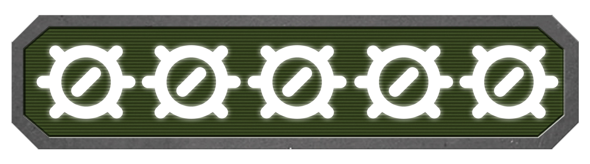

Caesar 3
Caesar 3 é uma verdadeira joia dos jogos de estratégia. Com sua atmosfera envolvente e jogabilidade viciante, o jogo oferece uma dose perfeita de nostalgia para os fãs de longa data. A construção e gestão de uma cidade romana é desafiadora e gratificante, mantendo os jogadores engajados por horas a fio.
O jogo se destaca pela sua profundidade estratégica, exigindo planejamento cuidadoso, gerenciamento de recursos e equilíbrio entre as necessidades da população. A trilha sonora encantadora e os gráficos encantadores, embora um pouco datados, adicionam um charme especial à experiência.
Caesar 3 continua sendo um dos jogos de estratégia mais desafiadores e imersivos até os dias de hoje, e é um verdadeiro clássico que todo fã do gênero deveria jogar.